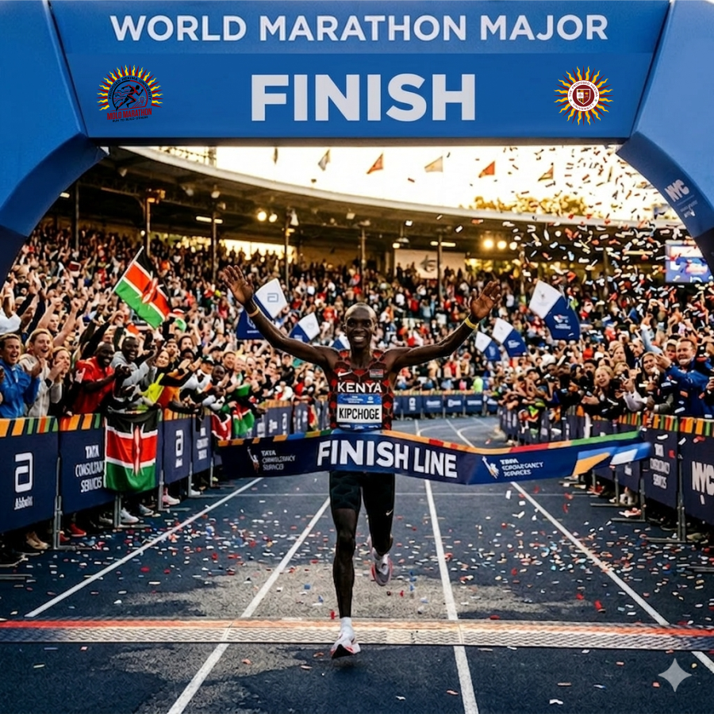
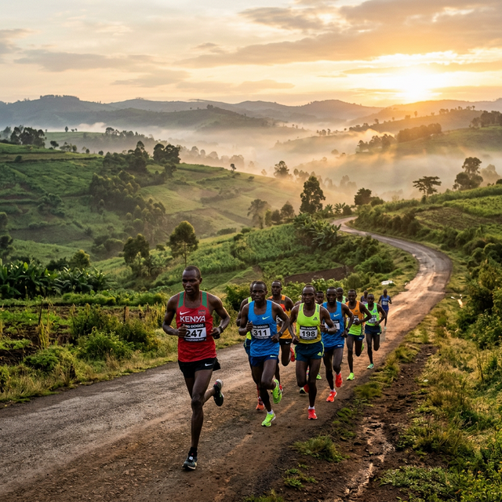
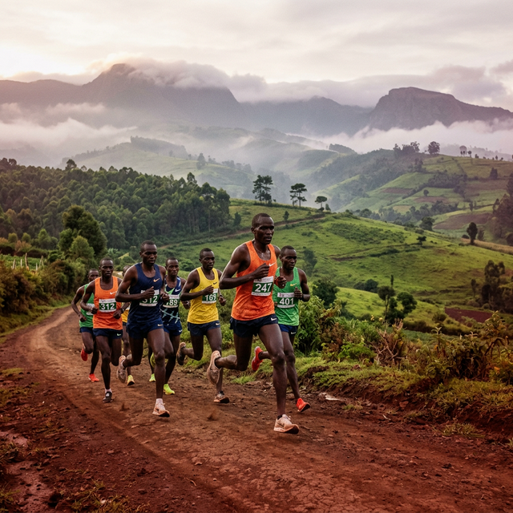

Choose Your Race
Four categories. One mission. Whether you're an elite athlete, a corporate team, or a community runner — there is a place for you at the Proposed Hekima University Molo Marathon 2026.
The Four Races
Molo's highland terrain offers a stunning and challenging course for all categories. Register early to secure your place.

21KM Half Marathon
The flagship category of the Proposed Hekima University Molo Marathon — a demanding 21-kilometre route through the breathtaking Molo highlands, attracting elite athletes from Kenya and across the world. This is the race that defines champions.
What to Expect
- ✓ Professionally certified and marked 21KM route through Molo highlands
- ✓ Elite timing chips and live race tracking
- ✓ Multiple hydration stations along the entire course
- ✓ Medical support teams positioned along the route
- ✓ Finisher medals for all category completers
- ✓ Top 3 male and female finishers receive cash prizes & trophies

5KM Elite Sprint
A shorter but intensely competitive race designed for fast-paced athletes and emerging talent looking to make their mark on the national athletics scene. The 5KM Elite Sprint is a showcase of raw speed and determination on Molo's challenging terrain.
What to Expect
- ✓ Competitive 5KM sprint course through Molo town
- ✓ Race timing and official results for all participants
- ✓ Hydration stations positioned at strategic points
- ✓ Finisher medals and recognition for top performers
- ✓ Ideal for emerging talent and experienced club runners

3KM Corporate Team Run
A premier networking and team engagement platform designed for corporate organisations and institutional partners. The Corporate Run is more than a race — it is a powerful brand visibility and networking opportunity at a nationally recognised event.
Corporate Package Includes
- ✓ Branded company t-shirts and running bibs
- ✓ Reserved corporate start-line position
- ✓ Dedicated corporate finishing zone with team photo
- ✓ VIP hospitality access in the corporate lounge
- ✓ Logo branding on event signage and media
- ✓ Networking with other senior corporate executives

3KM Fun Run
An inclusive and joyful race welcoming local residents, students, youth groups, schools, churches, and community organisations from Molo, Kuresoi North, and the wider Nakuru County. This is a celebration of togetherness, peace, and community spirit.
What to Expect
- ✓ Open to all ages and all fitness levels
- ✓ Fun, festive atmosphere along the entire 3KM route
- ✓ Special prizes for best community group and spirit award
- ✓ Direct link to the Entertainment Village post-race
- ✓ Youth engagement and peace-building messaging
Molo Highlands Race Course
A scenic and challenging route through the stunning landscapes of Molo, Nakuru County — at an altitude of approximately 2,400m above sea level.
Route Highlights
Molo Town Centre — main event grounds
Highland roads, rolling hills, scenic forest trails through Molo's tea country
Start: ~2,380m · Peak: ~2,460m · Finish: ~2,400m above sea level
Water stations every 3KM on the 21KM route and every 1.5KM on shorter routes
First aid stations and roving medical personnel along the entire course
21KM: 3 hours · 5KM: 45 minutes · 3KM: Open (no cut-off)
Race Day Essentials
Prepare well and enjoy the best possible experience on race day.
What to Wear
- Comfortable running attire suited to highland temperatures
- Lightweight, breathable running shoes with good grip
- Official race bib must be visible at all times
- Bring a light layer — mornings in Molo can be cool
What to Bring
- Government-issued ID or copy of registration confirmation
- Personal hydration (optional — stations provided)
- Energy snacks for the 21KM category
- Cash for food court and vendor stalls at the event village
Race Kit Collection
- Race kits available 1–2 days before the event at designated points
- Bring your registration confirmation email or phone number
- Kit includes: race bib, timing chip, safety pins, event programme
- Corporate kits include branded t-shirt and bib
Training Tips
- Train at altitude or include hill runs in your preparation
- Allow 8–12 weeks of structured training for the 21KM
- Test your gear during training to avoid race-day surprises
- Rest adequately in the 2 days leading up to the event
Your Race. Your Legacy.
Join 2,000+ runners from across Kenya and beyond. Register today and secure your place in one of the most meaningful races in Kenya's history.